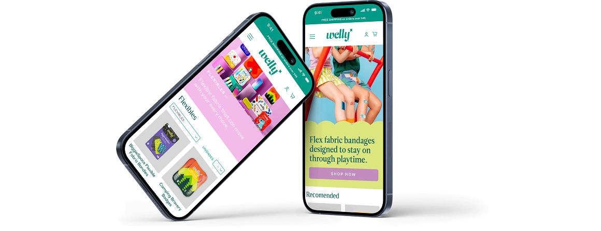
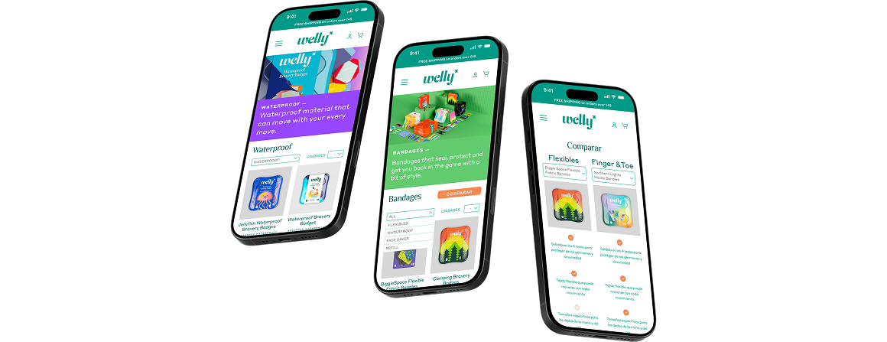
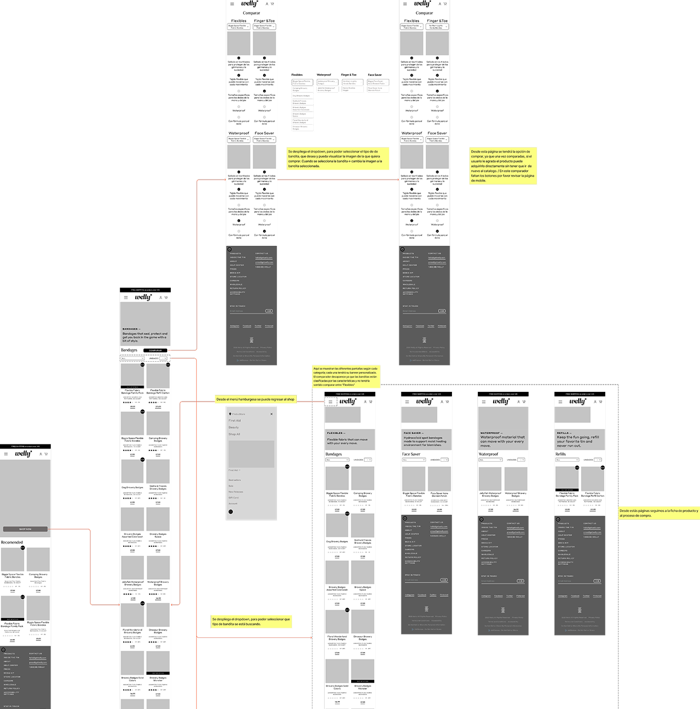
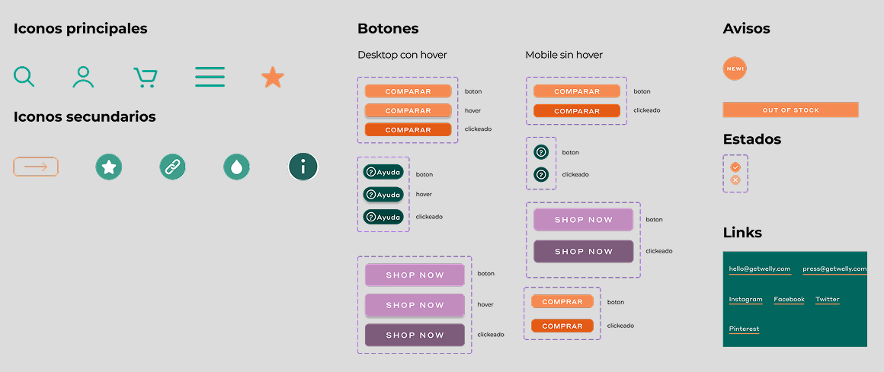
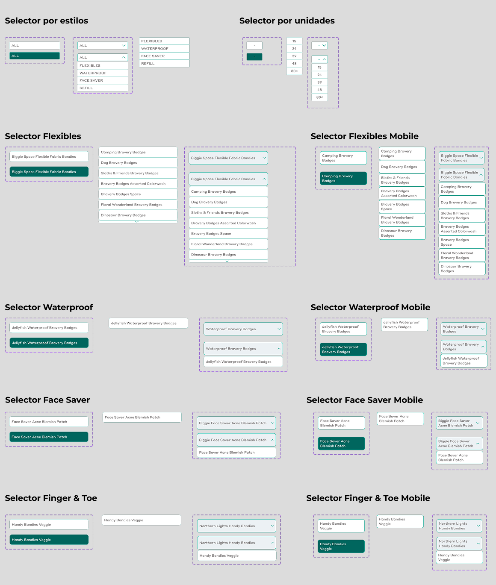

— 02 · E-COMMERCE · MÁSTER ELISAVA
Rediseño de la funcionalidad de filtros para Welly, una plataforma e-commerce especializada en vendas corporales. La nueva función permite encontrar fácilmente el producto correcto según talla, cantidad y necesidades específicas — especialmente útil para usuarios nuevos que no conocen la variedad de productos.
Welly es una plataforma e-commerce especializada en vendas corporales con una amplia variedad de productos. El reto: los usuarios nuevos no sabían cómo elegir el producto correcto. Se rediseñó la experiencia de filtros para guiar por talla, zona corporal, cantidad y tipo de uso — reduciendo la fricción y mejorando la conversión.

Welly es una plataforma de e-commerce especializada en vendas corporales diseñadas para distintas partes del cuerpo. En este proyecto mejoramos la experiencia de usuario introduciendo una nueva funcionalidad de filtros, que permite encontrar fácilmente el producto correcto según talla, cantidad y necesidades específicas.
Welly se especializa en crear vendas diseñadas para distintas zonas del cuerpo. Sus productos no solo ofrecen protección, sino también un toque divertido a la experiencia. Con colores vibrantes y estampados alegres, están pensadas para que puedas llevar tus heridas con orgullo.
Proponemos implementar filtros que permitan una búsqueda más personalizada y controlada. Estos filtros clasifican las vendas para facilitar la comparación entre opciones — especialmente útil para nuevos usuarios que no conocen la variedad de productos Welly.

Este wireframe de baja fidelidad ilustra el flujo de usuario en la plataforma Welly, desde la selección del producto hasta el proceso de compra.
Se enfoca en estructura, layout y usabilidad antes de avanzar a diseños de alta fidelidad.
Flujo de usuario: Muestra cómo navegan las categorías, aplican filtros y llegan al checkout.
Retroalimentación e iteración: Las anotaciones señalan áreas de mejora detectadas en las pruebas tempranas.
Próximos pasos: Estos insights guiarán las iteraciones hacia prototipos de alta fidelidad más intuitivos.
El sistema de diseño de Welly promueve consistencia y escalabilidad integrando colores, tipografía, grillas e iconos para una experiencia visual unificada.
— Migración de marca: evaluamos el sitio actual y transferimos los elementos de branding a Figma.
— Creación de componentes: desarrollamos botones, dropdowns e inputs desde cero en una librería reutilizable.
— Estructura en grilla: layout responsivo adaptable a distintos dispositivos.
— Documentación: todos los componentes están documentados en Figma para facilitar la colaboración.
Visualización del diseño: mejoré en representar y comunicar conceptos con claridad.
Resolución de problemas: desarrollé habilidades al enfrentar y resolver fallos de interacción.
Comunicación con el equipo: garanticé la comprensión del diseño para una implementación exitosa.
Consistencia: agregué nuevas funciones manteniendo colores y acciones coherentes.
Simplificación del flujo: hice la navegación más intuitiva en distintos productos.
Uso de Figma — Variables, Librerías. Estas experiencias enriquecieron mi crecimiento como diseñadora.


